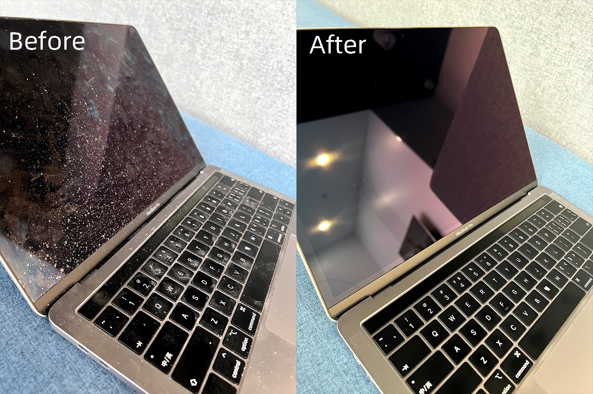

说明
本篇博客用于记录在技术学习方面的一些心得体会,望读者多多反馈.
一 个人重点
- 做事之前, 首先按《项目管理》文档, 先和领导、同事对齐目标, 对齐目标怎么衡量, 拆分任务、确定排期.
- 熟悉新系统、新模块时, 先盘点梳理现状, 然后发现待优化点, 然后对齐目标进行优化.
二 学习方法,如何保证自己学的比别人高效
（一）核心概念和核心流程梳理法
-
比如看一本很厚的书例如《深入 Linux 内核架构》,由于内容很多非常难以一下子全部搞懂,需要先把内容读薄 也就是看完一个章节内容后，进行梳理。例如看完中断处理，要总结核心模型，核心函数，画出他们之间的联系图 下次要用到本章内容时，先用自己梳理的联系图,遇到解释不通的地方再去查细节.
-
比如 SQLAlchemy,它总共就提供 2 个 system，如果细分的话，它又有很多子系统(子组件),我们要对他们进行逐一理解,分类，然后画出他们之间的关系。
-
另外，这里也可以把自己想象成 Linux 的某个子系统, 例如你是 Linux 的内存子系统、或者内核协议栈, 你会如何设计、完成高效、高质量的管理工作, 这样更加有助于你理解底层技术知识.
(二) 举一反三法.
-
当时解决了问题，但是后面要用到别的小知识，通常这种情况要能方便的查询后面的小知识。
-
- 举例: 比如 html 代码里，字体、背景的颜色，要能在自己的笔记里方便的查询。
-
- 比如 smarty 这种平时要用到但又不主流的语言，其所有的内置函数要能快速查询到。
- 学一达百
-
- 饮一水而知江河之滋味，见一叶而知秋之将至
三 学习方向
技术知识那么多, 如汪洋大海一般, 哪些才是学习的重点和方向呢?
1 从平时用的不方便的地方，着手研究，使自己和大家用起来方便.
-
一定要学以致用，把不方便的工作变成方便之后，要想办法形成通用工具，提供给其他同学使用，给其他同学也带来方便. 举一些例子:
-
- 一开始一些重要的项目上线之前每个项目会有一个 excel 表格做上线前的检查，把它演变为一个通用的 Web 工具， 统一迭代规范、统一统计上线检查进度、结果
2 从别人踩过的坑学习，例如其他 SRE 发出来的故障报告，避免自己踩坑
3 当你从来没有实现过(拥有过)某项技能时，从优秀的人、优秀的产品那里学习,多和优秀的、专业的人交流.
四 好的习惯
一：忠诚——忠心者不被解雇
单位可能开除有能力的员工，但对一个忠心耿耿的人，不会有领导愿意让他走，他会成为单位这个铁打营盘中最长久的战士，而且是最有发展前景的员工。
1、站在老板的立场上思考问题；
2、与上级分享你的想法；
3、时刻维护公司的利益；
4、琢磨为公司赚钱；
5、在外界诱惑面前经得起考验。
二：敬业——每天比老板多做一小时
随着社会进步，人们的知识背景越来越趋同。学历、文凭已不再是公司挑选员工的首要条件。很多公司考察员工的第一条件就是敬业，其次才是专业水平。
1、工作的目的不仅仅在于报酬；
2、提供超出报酬的服务与努力；
3、乐意为工作作出个人牺牲；
4、模糊上下班概念，完成工作再谈休息；
5、重视工作中的每一个细节。
三：自动自发——不要事事等人交代
不要事事等人交代，一个人只要能自动自发地做好一切，哪怕起点比别人低，也会有很大的发展，自发的人永远受老板欢迎。
1、从“要我做”到“我要做”；
2、主动分担一些“分外”事；
3、先做后说，给上司惊喜；
4、学会毛遂自荐；
5、高标准要求：要求一步，做到三步；
6、拿捏好主动的尺度，不要急于表现、出风头甚至抢别人的工作。
四：负责——绝对没有借口，保证完成任务
勇于承担责任的人，对企业有着重要的意义，一个人工作能力可以比别人差，但是一定不能缺乏责任感，凡事推三阻四、找客观原因，而不反思自己，一定会失去上级的信任。
1、责任的核心在于责任心；
2、把每一件小事都做好；
3、言必信，行必果；
4、错就是错，绝对不要找借口；
5、让问题的皮球至于你；
6、不因一点疏忽而铸成大错。
五：注重效率——算算你的使用成本
高效的工作习惯是每个可望成功的人所必备的，也是每个单位都非常看重的。
1、跟穷忙、瞎忙说“再见”；
2、心无旁骛，专心致志；
3、量化、细化每天的工作；
4、拖延是最狠毒的职业杀手；
5、牢记优先，要事第一；
6、防止完美主义成为效率的大敌。
六：结果导向——咬定功劳，不看苦劳
“无论黑猫、白猫，抓得到老鼠就是好猫！”，无论苦干、巧干，出成绩的员工才会受到众人的肯定。企业重视的是你有多少“功”，而不是有多少“苦”。
1、一开始就要想怎样把事情做成；
2、办法永远要比问题多；
3、聪明地工作而不仅仅是努力工作；
4、没有条件，就创造条件；
5、把任务完成得超出预期。
七：善于沟通——当面开口，当场解决
不好沟通者，即便自己再有才，也只是一个人的才干，既不能传承，又无法进步；好沟通者，哪怕很平庸，也可以边干边学，最终实现自己的价值。
1、沟通和八卦是两回事；
2、不说和说得过多都是一种错；
3、带着方案去提问题，当面沟通，当场解决；
4、培养接受批评的情商；
5、胸怀大局，既报喜也报忧；
6、内部可以有矛盾，对外一定要一致。
八：合作——团队提前，自我退后
团队提前，自我退后。不管个人能力多强，只要伤害到团队，公司决不会让你久留——不要认为缺了你一个，团队就无法运转！
1、滴水融入大海，个人融入团队；
2、服从总体安排；
3、遵守纪律才能保证战斗力；
4、不做团队的“短板”，如果现在是，就要给自己“增高”；
5、多为别人、为团队考虑。
九：积极进取——永远跟上企业的步伐
个人永远要跟上企业的步伐，企业永远要跟上市场的步伐；无论是职场还是市场，无论是个人还是企业，参与者都不希望被淘汰。为此就一定要前进，停就意味着放弃，意味着出局！
1、以空杯心态去学习、去汲取；
2、不要总生气，而要争气；
3、不要一年经验重复用十年；
4、挤时间给自己“增高”、“充电”；
5、发展自己的“比较优势”；
6、挑战自我，未雨绸缪。
十：低调——才高不必自傲
才高不必自傲，不要以为自己不说、不宣扬，别人就看不到你的功劳。所以别在同事面前炫耀。
1、不要邀功请赏；
2、克服“大材小用”的心理；
3、不要摆架子耍资格；
4、凡是人，皆须敬；
5、努力做到名实相符，要配的上自己的位置；
6、成绩只是开始，荣誉当作动力。
十一：节约——别把老板的钱不当钱
节约不是抠门，而是美德。不要把公司的钱不当钱，公司“锅”里有，员工“碗”里才有；同样，“锅”里多，“碗”里也自然就多。而掌勺的，恰恰就是你自己。1、报销账目，一定要诚信；
2、不耍小聪明，不贪小便宜；
3、不浪费公司的资源，哪怕是一张纸；
4、珍惜工作的每一分钟时间；
5、每付出成本，都要力争最大收益；
6、记住：省下的，就是利润！
十二：感恩——想想是谁成就了今天的你
为什么我们能允许自己的过失，却对他人、对公司有这么多的抱怨？再有才华的人，也需要别人给你做事的机会，也需要他人对你或大或小的帮助。你现在的幸福不是你一个人就能成就的。
1、老板给了你饭碗；
2、工作给你的不仅是报酬，还有学习、成长的机会；
3、同事给了你工作中的配合；
4、客户帮你创造了业绩；
5、对手让你看到距离和发展空间；
6、批评者让你不断完善自我。
十三: 什么叫工作到位
- 汇报工作说结果
- 请示工作说方案（让领导做选择题、而不是问答题）
- 总结工作说流程
- 布置工作说标准
- 关心下属问过程
十四: 如何做个好员工
- 1 有强大的同理心
- 2 听话、出活
-
- 2.1 做事要有依据, 做完要有证据.
-
- 2.2 凡事有交代，件件有着落，事事有回音.
- 3 想要人前显贵、必须背地里受罪
- 4 能忍多大事儿，就能成多大事儿
- 5 总躲着领导，你就危险了
- 6 帮助别人千万别吝啬
- 7 目标再目标、量化再量化
-
- 没有目标的，都不叫工作；没有量化的，都不叫目标。
- 8 解决问题是我的义务, 做一个问题终结者.
- 9 没有哪个行业的钱是好赚的。干工作、受点气是正常的。
- 10 赚不到钱，赚知识； 赚不到知识，赚经历；赚不到经历，赚阅历； 以上都赚到了 就不可能赚不到钱。
十五: 老板期望的结果
- 1 员工遇到了什么问题. 然后去解决.
- 2 用哪个指标衡量结果, 具体数字是多少. 比如成功率从 50%提升到 70%. 比如下面这张图:

- 3 如何通用化到其他更多项目、更多团队. 比如成功率从 50%提升到 70%之后, 员工总结了一套机制、方案保持住成功率, 同时也可以通用化应用到其他项目.